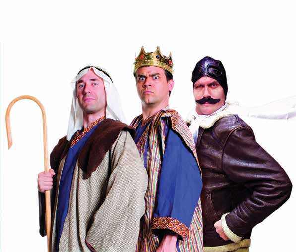

The Bible: The Complete Word of God (abridged)

THE SHOW THEY ALMOST BANNED. Yes, it's an affectionate, irreverent roller coaster ride from fig leaves to final judgment as the bad boys of abridgement tackle the great theological questions: Did Adam and Eve have navels? Did Moses really look like Charlton Heston? And why isn't the word "phonetic" spelt the way it sounds? Whether you are Catholic or Protestant, Muslim or Jew, Atheist or Jedi, you will be tickled by the RSC'S romp through old time religion.
"The RSC put the 'fun' back in fundamentalism." Baltimore Sun
"A goofy triumph. *****" Belfast Telegraph
"This is a slick, fast, very funny show... skilled performers with immaculate, sassy American timing." Sunday Times
Friday 2 May
Venue: Droichead Arts Centre, Stockwell Street
Times: 8:30 pm Fri 2 May
Tickets: 18 in advance, 20 on day